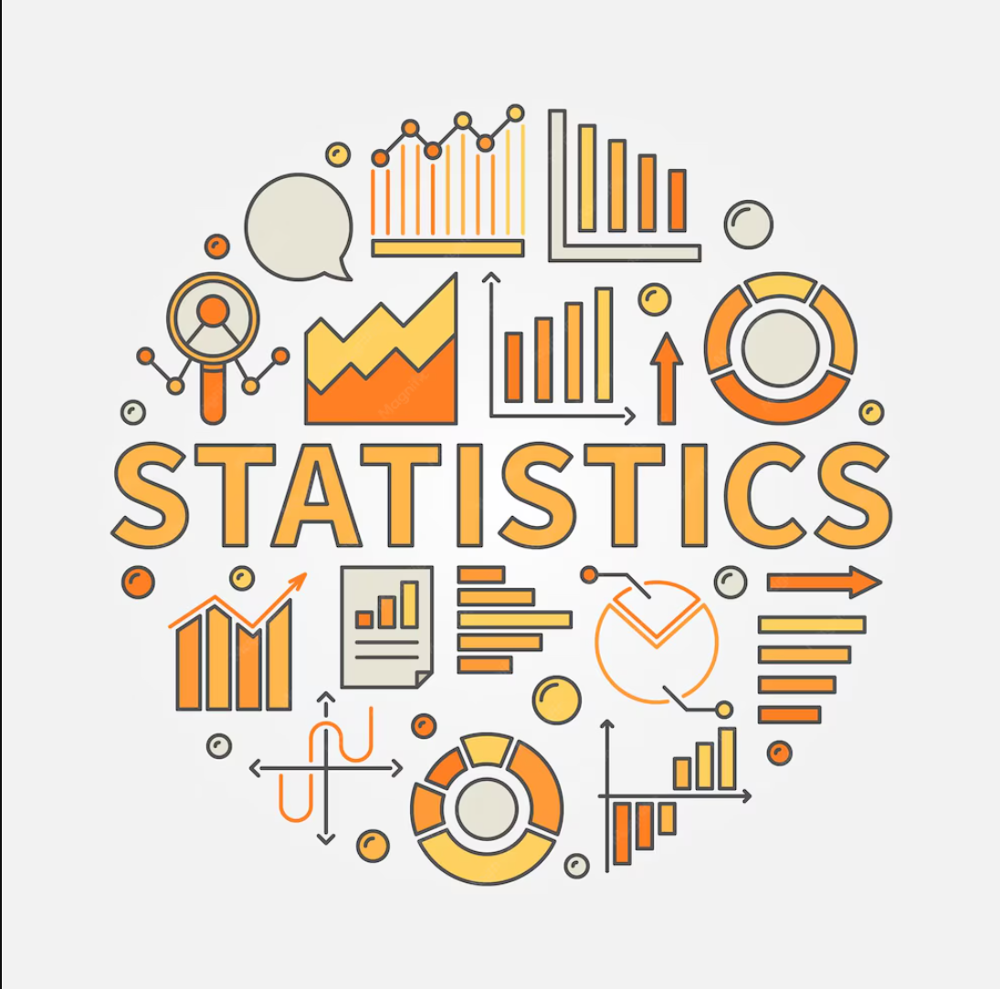

About the Instructor
Dr. USHA MOHAN
- Ph.D (operation Research), Indian Statistical Institute, Chennai - 2002
- M. Phil (operation Research), University of Hyderabad, Hyderabad - 1992
- M.Sc, Statistics and operation Research, University of Hyderabad, Hyderabad - 1991
- B.Sc, Mathematics, Physics & Electronics, Osmania University, Hyderabad - 1989
About the Course
Statistics-1 [BSMA1002]
- This is foundational level course.
- This Course is designed to provide a solid foundation in statistical concepts and methods.
- The course covers topics such as descriptive statistics, probability theory, hypothesis testing, and regression analysis.
- Course duration is 12 weeks.

Activity-1
Activity-2
Activity-3
This activity involved creating a student portfolio using Google Sites with Statistics 1 as one of the pages. The portfolio presents the concepts learned during the course through a clean, organized, and visually appealing design. It includes a course overview, learning outcomes, and resources that reflect my understanding of Statistics 1.
- 1. Activity Overview
- Created a Google Sites student portfolio featuring Statistics 1 as one of the pages. The portfolio is designed to present my learning in a clear, organized, and visually engaging manner.
- 2. Objective
- To create a professional student portfolio that showcases my understanding of Statistics 1 and demonstrates my ability to organize information using Google Sites.
- 3. Skills Demonstrated
- Google Sites Design
- Content Organization
- Visual Presentation
- Digital Portfolio Creation
- Basic Web Design
- 4. Learning Outcome
- This activity improved my skills in creating a structured portfolio, presenting information effectively, and designing an attractive educational website.
- Click Here to view The Course Review Page
This activity involved creating a Spreadsheet using Google sheet with any data set containing atleast 1000 row & 5 column, And also creates a another Spreadsheet Showing about data-type, scales of measurement, Graphical representation and more.
- 1. Activity Overview
- Created a Google Sheets spreadsheet with a dataset. Also created another spreadsheet showing data types, scales of measurement, and graphical representations.
- 2. Objective
- To create a Spreadsheet, that showcase my understanding of Google sheet and demonstrate my ability to Summarize data using Google sheet
- 3. Skills Demonstrated
- Google Sheets features
- data Summarization
- Graphical Representation
- Digital Spreadsheet Creation
- Basic data Analysis
- 4. Learning Outcome
- This activity improved my skills in creating a structured spreadsheet, presenting information effectively, and Summarizing the data via Google Sheets.
- Click Here to view The data Spreadsheet Click Here to view The Data Types Spreadsheet
this is a blank line created Intentionally
This activity involved creating a Spreadsheet using Google sheet with any data set containing atleast 1000 row & 5 column, And also identify measure of central tendency dispersion and association.
- 1. Activity Overview
- Created a Google Sheets spreadsheet with a dataset. Also icludes measure of central tendency, dispersion, and association and Graphs.
- 2. Objective
- To create a Spreadsheet, that showcase my understanding of Google sheet and demonstrate my ability to Summarize data using Google sheet
- 3. Skills Demonstrated
- Google Sheets features
- data Summarization
- Graphical Representation
- Digital Spreadsheet Creation
- Basic data Analysis
- 4. Learning Outcome
- This activity improved my skills in creating a structured spreadsheet, presenting information effectively, and Summarizing the data via Google Sheets.
- Click Here to view The data Spreadsheet